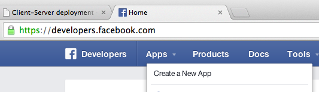
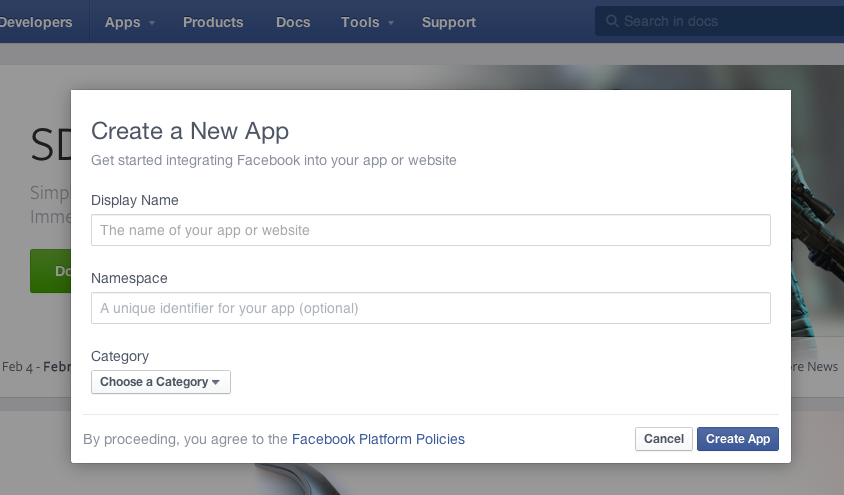

Setup Facebook authorized access¶
SocialBus Facebook Consumer needs to make authorized calls to Facebook’s APIs. But first Facebook needs to indentify your SocialBus instance as an application client.
This guide walks you through the steps of registering an application that you can use to integrate your SocialBus instance with Facebook.
Registering a new application at Facebook¶
All Facebook users are potentially Facebook application developers. Simply visit http://developer.facebook.com and sign in with your Facebook credentials.
From http://developer.facebook.com, click on “Apps” menu e choose “Create new app”
Click the “Create a new application ” button near the top. A new page with the Create an application form requires basic information about your application.
It will present a form. Fill them as you please.
You have registered your Facebook application. The main fields to note are App Id and App Secret. These values are your application’s credentials for Facebook and thats what you will use to obtain access.
Take note of these keys. Now you have them you are ready to obtain access tokens. You will inform these keys on your SocialBus Facebook Consumer configuration file. (conf/client.conf):
# authentication
facebook.application.key=<your-app-key>
facebook.application.secret=<your-app-secret-key>